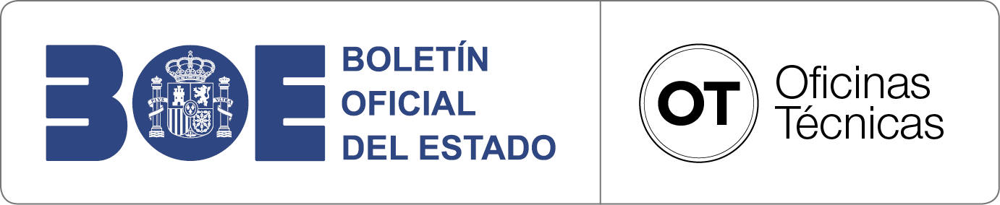

Esta herramienta sirve para hacer el cálculo de la mochila ecológica de las publicaciones, y está en proceso de construcción.
Por el momento está implementada en Excel, y no se puede ejecutar desde aquí.
Para hacerlo abrir el directorio Q:\Ofic_Tecnicas_y_Rel_clientes\Oficina_tecnica\Apps_OOTT\Mochila ecológica publicaciones y abrir Calculadora_Mochila_Ecologica_PublicacionesBOE_v1.xlsm
Esta herramienta permite renombrar archivos con codificación de caracteres extraña, así como acortar los nombres de archivo demasiado largos.
Se trata de una aplicación de PowerShell de Windows que no se puede ejecutar desde aquí.
Para hacerlo abrir el directorio Q:\Ofic_Tecnicas_y_Rel_clientes\Oficina_tecnica\Apps_OOTT\Renombrar_archivos y ejecutar Lanzar_App.bat
Puede dar error por tratarse de un script externo a Windows, para autorizar su ejecución se ha de abrir la aplicación PowerShell en Windows y ejecutar este código (solo hace falta hacerlo la primera vez):
Set-ExecutionPolicy RemoteSigned -Scope Process
Haz clic en la unidad correspondiente en la tabla. Se te solicitará el número de HR para generar la etiqueta automáticamente.
| Código | Unidad (Haz clic para lanzar la etiqueta) |
|---|---|
| 20 | Imprenta Nacional |
| 2010 | Producción |
| 201001 | Unidad de Tratamiento Digital de la Información |
| 201002 | Preimpresión |
| 201003 | Unidad de Producción Digital y Acabados |
| 201004 | Digitalización |
| 201006 | Unidad de Encuadernación Artesanal |
| 201010 | Edición Electrónica |
| 201011 | Producción Digital |
| 2020 | Recursos Técnicos y Explotación |
| 202001 | Unidad de Apoyo |
| 202002 | Distribución y Logística |